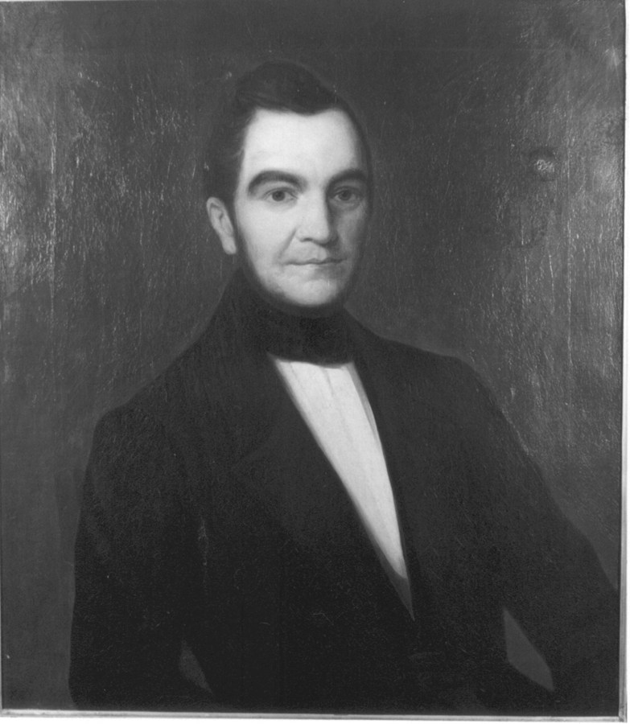
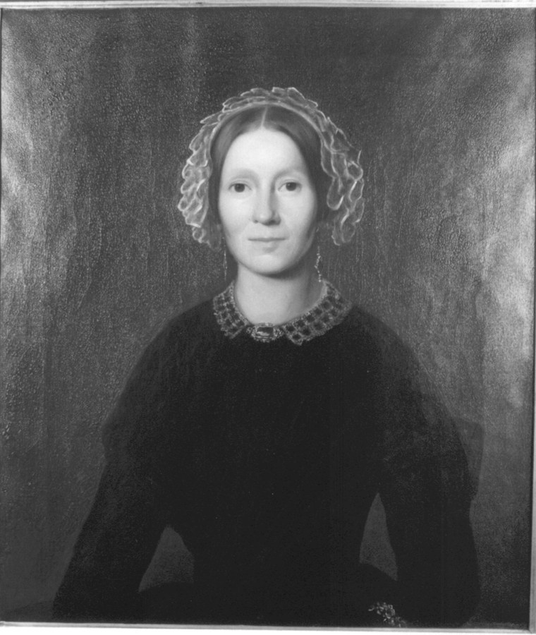
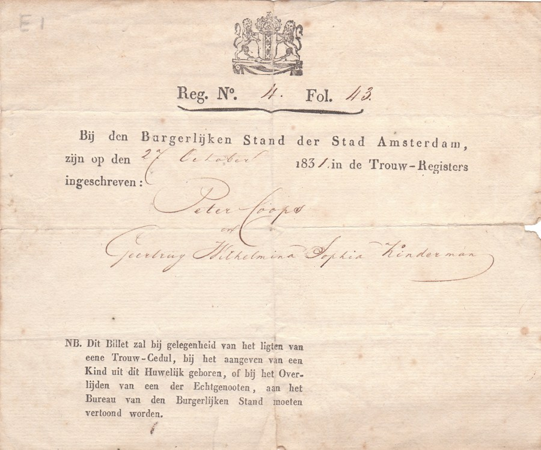

Biografie · Amsterdam en Doetinchem
Peter Coops en Geertrui Kindermann
Een Doetinchemse koopman en een Amsterdamse kruideniersdochter
Peter Coops (1804–1855) was winkelier toen hij in 1831 met Geertrui Wilhelmina Sophia Kindermann (1807–1894) trouwde. Ze woonden in Doetinchem, waar ook Geertrui’s broer later als luthers predikant kwam wonen. Een boedelverdeling uit 1852 laat zien hoe Peter de steenfabriek van zijn familie in handen kreeg.
‹ Alle biografieën en historische artikelen01 / Het echtpaar
Twee portretten uit 1851
Twintig jaar na hun huwelijk schilderde Gijsbert Buitendijk Kuyk de portretten van Peter en Geertrui. De twee olieverfschilderijen zijn als pendanten geregistreerd bij het Iconografisch Bureau. Klik op een portret voor de foto op volledige resolutie.




02 / Jeugd en huwelijk
Een huwelijk in Amsterdam
Peter werd op 12 juli 1804 in Doetinchem geboren, als zoon van Willem Coops D.Jz. en Johanna Maria Evekink. Geertrui werd volgens Nederland’s Patriciaat op 5 januari 1807 in Amsterdam geboren. De huwelijksregistratie vermeldt haar doop op 20 januari 1807 en noemt haar ouders Carel Heinrich Kinderman en Aaltje Hendrika Haas. In de overlijdensregistratie heet haar moeder Alida Haas.
Geertrui’s vader had in Amsterdam een kruidenierswinkel en grossierderij. Volgens J.P. de Keyser, die haar broer Jan Christian Kindermann goed kende, verloren de kinderen hun moeder in 1810 en hun vader in 1813. Hij vertelt dat Jan Christian en zijn zus daarna in het Lutherse Weeshuis in Amsterdam terechtkwamen. De familietekst identificeert die zus als Geertrui. J.P. de Keyser, Levensschets van Jan Christian Kindermann, 1877, p. 95–100.
Op 27 oktober 1831 trouwden Peter en Geertrui in Amsterdam. De akte noemt Peter, 27 jaar oud, winkelier. Geertrui was 24 jaar en staat ingeschreven als Geertruij Wilhelmina Sophia Kinderman. Het familiearchief bewaart het trouwbewijs. Ook de Opregte Haarlemsche Courant maakte het huwelijk bekend. Noord-Hollands Archief, huwelijksakte, register 4, folio 43 · Huwelijksbericht van 1 november 1831.


03 / Gezin en woonplaats
Op de hoek van de Markt
S.H. Lovink situeert hun woning in Doetinchem op de hoek van de Markt en de Korte Hezenstraat. Hun zoon Jan Christian Coops werd in 1838 geboren. Negen jaar later hield Geertrui’s broer Jan Christian Kindermann zijn intreerede als evangelisch-luthers predikant in dezelfde stad. Volgens De Keyser had zijn arts hem om een oogkwaal geadviseerd hogere en drogere lucht op te zoeken. De Keyser, p. 95–96 en 100.
Hoe Peter en Geertrui elkaar leerden kennen, is onbekend. In het familiemanuscript staat één mogelijke verbinding. De Keyser noemt de marineofficier Jan Schröder als goede vriend van Geertrui’s broer. Schröder was volgens de familiegegevens getrouwd met Peters zus Petronella. Of zij het paar hebben samengebracht, blijft een open vraag.
04 / Werk en bezit
Steenfabriek IJsselzicht in Wijnbergen
De steenoven aan de Oude IJssel komt ook voor onder de naam IJsselzigt. Berghapedia noemt, op basis van Twee eeuwen Gelderse bakstenen, Willem Coops omstreeks 1843 en Peter Coops in 1850. Die jaartallen plaatsen vader en zoon bij de fabriek. De notariële boedelverdeling legt vast wanneer die aan Peter werd toebedeeld. Berghapedia, IJsselzicht.
Op 18 augustus 1852 verdeelde notaris J.D. Pasteur de nalatenschap van Willem Coops en Johanna Maria Evekink. Peter kreeg de steenfabriek in de toenmalige gemeente Bergh, een voorraad stenen en een tuin in Doetinchem. De akte maakt de fabriek terugvindbaar in het kadaster van Zeddam, sectie A, percelen 25–28 en 56. Peter trad bij dezelfde verdeling op als gemachtigde van Herman Hendrik Timotheus Coops. Erfgoedcentrum Achterhoek en Liemers, toegang 3012, inv. 32.
05 / Laatste jaren
Geertrui na 1855
Peter overleed op 5 juni 1855 in Stad-Doetinchem, vijftig jaar oud. De overlijdensakte noemt hem koopman. In november van datzelfde jaar komen Geertrui en haar broer samen voor in de index van notaris J.D. Pasteur. Een tweede beschrijving uit hetzelfde inventarisnummer noemt een borgtocht. Voor wie die borg stond en welke verplichting ermee gemoeid was, vraagt inzage in de volledige akte. Gelders Archief, overlijdensakte 22 · Notariële index, 6 november 1855 · Indexbeschrijving borgtocht.
Geertrui overleefde Peter ruim 39 jaar. Zij stierf op 29 november 1894 in Stad-Doetinchem, 87 jaar oud. Haar naam is terug te vinden op het grafmonument aan de Loolaan. Gelders Archief, overlijdensakte 89 · Begraafplaats Loolaan, monument E-021.
Verantwoording
Bronnen en open vragen
- Nederland’s Patriciaat, jaargangen 1947 en 1983, genealogie Coops. Een handgeschreven aantekening in het familie-exemplaar uit 1947 verbindt Geertrui met de hugenotenfamilie De Vernal. Die overlevering is nog niet gestaafd met akten.
- S.H. Lovink Hz., De Geschiedenis van Doetinchem, Raadgeep & Berrevoets, 1978, voor de woning aan de Markt.
- Familiearchief Coops, trouwbewijs, portretfoto’s en registratiekaarten van het Iconografisch Bureau, materiaal over de familie Kindermann en de bewaarde tekst over IJsselzicht.
- Erfgoedcentrum Achterhoek en Liemers, toegang 0812, bijlage I bij inventarisnummer 85, vermelding C5 ‘Peter Coops, Doetinchem’. Deze vermelding in de inventaris van notaris Callenfels en zijn voorgangers is een aanknopingspunt voor verder onderzoek.
Heeft u een foto van IJsselzicht of van het huis aan de Markt, of kent u een akte over Geertrui’s jeugd of de borgtocht? Deel uw informatie met Familie Coops.
Bekijk de genealogie · Alle biografieën en historische artikelen